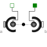

LineForceWithMassGeneral line force component with an optional point mass on the connection line |

|
Information
This information is part of the Modelica Standard Library maintained by the Modelica Association.
This component is used to exert a line force between the origin of frame_a and the origin of frame_b by attaching components of the 1-dimensional translational mechanical library of Modelica (Modelica.Mechanics.Translational) between the two flange connectors flange_a and flange_b. Optionally, there is a point mass on the line connecting the origin of frame_a and the origin of frame_b. This point mass approximates the mass of the force element. The distance of the point mass from frame_a as a fraction of the distance between frame_a and frame_b is defined via parameter lengthFraction (default is 0.5, i.e., the point mass is in the middle of the line).
In the translational library there is the implicit assumption that forces of components that have only one flange connector act with opposite sign on the bearings of the component. This assumption is also used in the LineForceWithMass component: If a connection is present to only one of the flange connectors, then the force in this flange connector acts implicitly with opposite sign also in the other flange connector.
Parameters (9)
| s_small |
Value: 1e-10 Type: Distance (m) Description: Prevent zero-division if distance between frame_a and frame_b is zero |
|---|---|
| fixedRotationAtFrame_a |
Value: false Type: Boolean Description: = true, if rotation frame_a.R is fixed (to directly connect line forces) |
| fixedRotationAtFrame_b |
Value: false Type: Boolean Description: = true, if rotation frame_b.R is fixed (to directly connect line forces) |
| animateLine |
Value: true Type: Boolean Description: = true, if a line shape between frame_a and frame_b shall be visualized |
| animateMass |
Value: true Type: Boolean Description: = true, if point mass shall be visualized as sphere provided m > 0 |
| m |
Value: 0 Type: Mass (kg) Description: Mass of point mass on the connection line between the origin of frame_a and the origin of frame_b |
| lengthFraction |
Value: 0.5 Type: Real Description: Location of point mass with respect to frame_a as a fraction of the distance from frame_a to frame_b |
| lineShapeType |
Value: "cylinder" Type: ShapeType Description: Type of shape visualizing the line from frame_a to frame_b |
| lineShapeExtra |
Value: 0.0 Type: ShapeExtra Description: Extra parameter for shape |
Inputs (6)
| specularCoefficient |
Default Value: world.defaultSpecularCoefficient Type: SpecularCoefficient Description: Reflection of ambient light (= 0: light is completely absorbed) |
|---|---|
| lineShapeWidth |
Default Value: world.defaultArrowDiameter Type: Length (m) Description: Width of shape |
| lineShapeHeight |
Default Value: lineShapeWidth Type: Length (m) Description: Height of shape |
| lineShapeColor |
Default Value: Modelica.Mechanics.MultiBody.Types.Defaults.SensorColor Type: Color Description: Color of line shape |
| massDiameter |
Default Value: world.defaultBodyDiameter Type: Real Description: Diameter of point mass sphere |
| massColor |
Default Value: Modelica.Mechanics.MultiBody.Types.Defaults.BodyColor Type: Color Description: Color of point mass |
Connectors (4)
| frame_a |
Type: Frame_a Description: Coordinate system a fixed to the component with one cut-force and cut-torque |
|
|---|---|---|
| frame_b |
Type: Frame_b Description: Coordinate system b fixed to the component with one cut-force and cut-torque |
|
| flange_b |
Type: Flange_a Description: 1-dim. translational flange (connect force of Translational library between flange_a and flange_b) |
|
| flange_a |
Type: Flange_b Description: 1-dim. translational flange (connect force of Translational library between flange_a and flange_b) |
Components (3)
Used in Components (1)
|
Modelica.Mechanics.MultiBody.Forces Linear translational spring with optional mass |